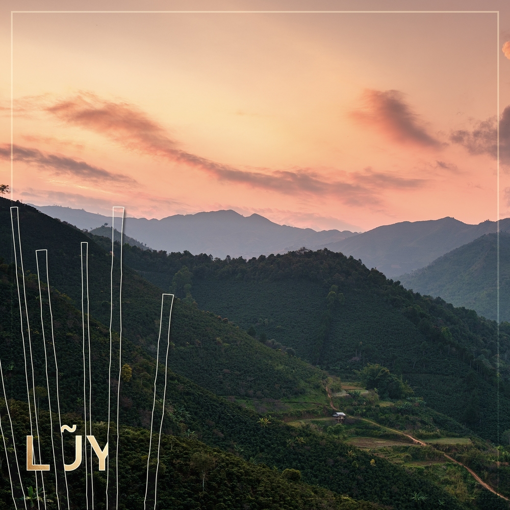

Hạt cà phê xứng tầm Specialty của Việt Nam đầu tiên tại Lacàph
Lacàph luôn tự hào là cầu nối “dẫn dắt” những trí óc tò mò khám phá hành trình hương vị cà phê Việt Nam và cái nôi đã nuôi dưỡng một nền văn hóa chia sẻ và thưởng thức.
Vì vậy chúng tôi tự hào ra mắt dòng blend mới nhất - một sản phẩm cà phê chất lượng đặc sản đầu tiên của Lacàph, Lũy Blend. Lacàph tự tin rằng Lũy Blend là một “sứ giả” xứng đáng có thể đại diện cho tiềm năng hương vị cà phê Việt Nam trên cán cân thế giới.

Lũy Blend - hạt cà phê thấm nhuần tinh thần Việt Nam
Màu sắc cá tính dân tộc
“...Cây tre hiền lành,
Mà giặc khiếp kinh.
Nhìn tre giặc sợ,
Thấp thỏm, giật mình [...]
Tre thù quân giặc,
Tre yêu xóm làng.
Tre mọc thành hàng,
Chở che bao bọc...”
(Ca dao Việt Nam)
Lacàph xây dựng ý tưởng chủ đạo của Lũy dựa trên hình ảnh Lũy tre. Từ kho tàng dân gian cùng dòng lịch sử gian nan, con người Việt Nam đã tạo dấu ấn tích cực trong ánh nhìn của bạn bè năm châu qua tinh thần đoàn kết và ý chí bền bỉ. Đó chính là nét đẹp dân tộc mà chúng tôi muốn truyền tải - đồng thời là tố chất được tìm thấy ở tre: thống nhất, tương trợ, và ý khí. Cây tre còn là hình ảnh gắn liền với đời sống của người Việt Nam, vốn là một đất nước dĩ nông vi bản.
Từ lũy tre đến Lũy Blend by Lacàph
Từ “thống nhất”, Lacàph phối hợp hai giống cà phê từ ba nông trại ở ba mảnh đất trồng cà phê trứ danh trải dài từ Bắc chí Nam. Từ “tương trợ”, Lacàph thiết kế tỉ lệ để có thể tận dụng ưu điểm của Robusta Sẻ để tương trợ cho Catimor, mang lại một trải nghiệm hương vị đặc sắc trọn vẹn. Lacàph thiết kế hồ sơ rang của Lũy để bạn có thể cảm thụ Lũy dù là với hình thức yêu thích nào. Trên tất cả, câu chuyện của Lũy chính là câu chuyện của những người nông dân tiên phong làm cà phê chất lượng mà chúng tôi đặc biệt tự hào khi được làm việc cùng.
Lacàph muốn thông qua Lũy dẫn dắt người yêu cà phê và cả người tò mò hành trình khám phá giá trị văn hóa, cái đẹp thuần khiết từ tình yêu của những con người tham gia tạo nên dòng hương vị đặc sản này. Đó là anh Marian và câu chuyện thay đổi chất lượng sống cho người dân ở Lang Biang; đó là chị Ngọc và hoài bão với Fine Robusta; đó là hợp tác xã Ara-Tay mang hy vọng bảo bọc từng trái cà. Họ là những người hùng thầm lặng, chăm chỉ ươm mầm khát vọng, để một ngày rạng danh cà phê quê hương.
Sợi chỉ muôn màu dệt trên tấm thảm lịch sử
Đối với Lacàph, Lũy dệt vào màu sắc mới trên tấm thảm lịch sử của giai đoạn phát triển hết sức sôi nổi của cà phê Việt Nam. Đồng thời, Lũy Blend gửi gắm tham vọng của Lacàph ở vai trò là người kể chuyện cà phê và văn hóa Việt Nam.
Cà phê Việt Nam là một viên ngọc thô sáng giá, với nhiều cơ hội khai thác màu mỡ còn chờ được khai phá. Vì vậy Lacàph tin rằng, đây là thời điểm thích hợp để những “hương vị” tiềm năng xứng đáng được lan tỏa.
Mời bạn đến khám phá hương vị của Lũy, đặc biệt chỉ có tại các địa chỉ của Lacàph ở 220 Nguyễn Công Trứ và 151 Đồng Khởi, thành phố Hồ Chí Minh!
BÀI VIẾT MỚI NHẤT
Chuỗi hành trình khám phá Lacàph Lab Series chính thức trở lại với sản phẩm cà phê Robusta Sẻ nguyên trái từ nông trại của Anh Phú lên men với bia Tiramisu Stout của Heart of Darkess.
Với dòng sản phẩm đầu tiên thuộc Lacàph Lab Series I, chúng tôi hợp tác với Heart of Darkness Brewery mang đến cho bạn một loại cà phê được lên men với hỗn hợp BiA thủ công all-malt craft lager. Đồng hành cùng sự kết hợp này là Anh Ngọc, người đã nuôi trồng nên những hạt Arabica ngon nhất Việt Nam. Kết quả cho ra một dòng cà phê độc đáo mang hương vị hài hoà và khó phai của vải, mơ và đào.

Gia đình của Anh Ngọc đã làm nghề nông nghiệp và trồng cà phê hơn 80 năm. Chúng tôi sử dụng các Arabica Bourbon & Cascara của anh để tạo ra các Lacàph Espresso Blend và Cold Steeped Cascara.